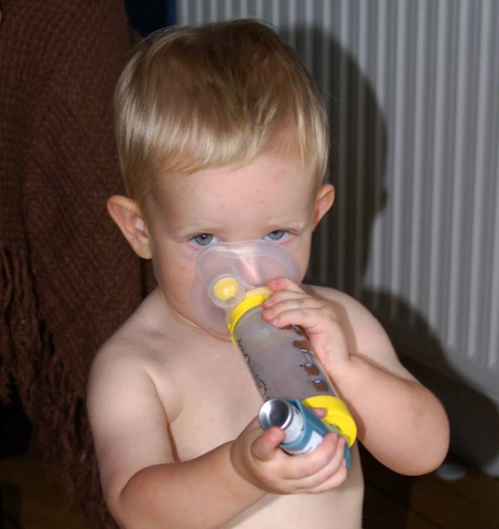
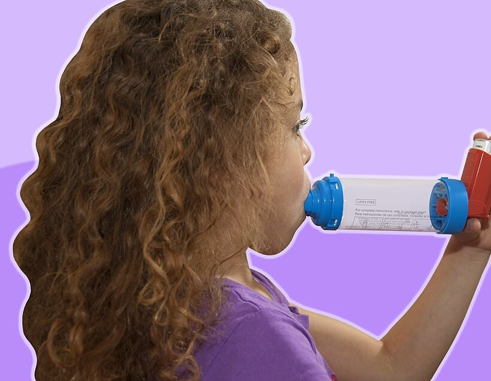

氣喘
氣喘是氣管長期處在「容易發炎、容易收縮」的狀態。它沒辦法一次治好，但只要每天規則保養、用對吸入器，絕大多數孩子都能正常上學、跑跳、睡得好。
1氣喘時，氣管發生了什麼？
氣喘孩子的氣管即使沒有症狀，管壁裡也常有輕微的慢性發炎。遇到感冒、過敏原、冷空氣或運動等刺激時，就會出現三種變化，讓氣管變窄：
- 平滑肌收縮：氣管外圍的肌肉縮緊，吸入支氣管擴張劑可以很快放鬆它。
- 黏膜發炎腫脹：需要吸入型類固醇每天慢慢消炎，這就是「保養」。
- 黏液變多：痰卡在氣管裡，咳嗽、喘鳴更明顯。
小嬰兒感冒時的喘，大多是細支氣管炎，不一定是氣喘；兩者怎麼區分，可以看細支氣管炎那一頁。
2症狀與誘發因子
半夜或天亮前最明顯
常見的誘發因子
- 病毒感冒：孩子氣喘發作最常見的原因。
- 過敏原：塵蟎、蟑螂、貓狗皮屑、黴菌；台灣孩子以塵蟎最常見（居家防塵蟎的方法可參考過敏性鼻炎）。
- 菸害：二手菸、三手菸（衣服、頭髮上的菸味）。
- 空氣污染、冷空氣、溫差大；秋冬換季常是孩子的「發作季節」。
- 劇烈運動、大哭大笑。
3氣喘控制得好不好？用 4 個問題自我檢查
回想最近 4 週，孩子是否有下面的情形？
| 最近 4 週 | 有／沒有 |
|---|---|
| ① 白天有咳嗽、喘的症狀，一週超過 2 次？ | 有 ／ 沒有 |
| ② 曾經因為咳嗽或喘，半夜醒來？ | 有 ／ 沒有 |
| ③ 需要用緩解藥（急救藥），一週超過 2 次？ 運動前預防性使用不算 | 有 ／ 沒有 |
| ④ 因為氣喘，活動受限（跑跳、玩耍比別人少、容易累）？ | 有 ／ 沒有 |
繼續保養，照約定時間回診。
回診時告訴醫師，先檢查吸藥方法和是否每天使用。
請提早回診調整藥物。
例如掛急診、住院、吃類固醇，即使現在沒症狀，也是需要加強保養的警訊。
4兩種藥：保養藥與緩解藥
🛡️ 保養藥（控制藥）
- 作用
- 消除氣管慢性發炎，預防發作
- 成分
- 吸入型類固醇（ICS），有時加上長效支氣管擴張劑
- 用法
- 每天使用，效果需要幾天到幾週慢慢出來
- 重點
- 沒有症狀也要用，不要自己停
⚡ 緩解藥（急救藥）
- 作用
- 幾分鐘內打開氣管，緩解咳嗽、喘
- 成分
- 短效支氣管擴張劑（如 salbutamol），或醫師指定的吸必擴
- 用法
- 有症狀時才用，或運動前使用
- 重點
- 用得越來越頻繁，代表控制變差，要回診
只靠短效擴張劑「喘了才噴」、沒有任何類固醇保養，嚴重發作的風險較高，國際指引已經不建議這樣做 [1]。
5吸入器怎麼選？依年齡不同
吸入藥直接送到氣管，劑量小、副作用少。關鍵是孩子能不能正確吸進去，所以醫師會依年齡選擇裝置 [1]：


6吸必擴（Symbicort）示範影片
都保（乾粉吸入器）
- 旋開瓶蓋，吸入器直立、底部旋轉盤朝下。
- 裝藥：旋轉盤往一個方向轉到底，再轉回來，聽到「喀」一聲，就裝好一劑。
新的一支第一次使用前，要先這樣轉 2 次啟用，再裝藥使用 [8]。 - 頭轉開、先吐氣，不要對著吸嘴吐氣（會讓藥粉受潮）。
- 嘴唇含緊吸嘴，用力、快速、深深地吸一口氣。
- 移開吸嘴，閉氣約 5–10 秒，再慢慢吐氣。
- 需要第二下時，重新裝藥（再轉一次）再吸。
- 蓋回瓶蓋，漱口後吐掉。
確保效果的訣竅
- 吸氣方式和噴霧型相反：乾粉要「用力、快」吸，噴霧要「慢慢、深」吸，不要搞混。
- 吸不到味道是正常的：藥量很少，大多沒有感覺；不要因為「好像沒吸到」就多吸好幾次。
- 搖的時候沙沙聲是乾燥劑，不是藥；使用前不需要搖 [8]。
- 看劑量窗：出現紅色代表快用完，請準備新的一支；出現「0」就是用完了 [8]。
- 吸嘴不可以用水洗，用乾的布或衛生紙擦拭外側即可 [8]。
- 每次漱口：可以減少聲音沙啞和口腔念珠菌（鵝口瘡）。
- 回診時帶著吸入器，讓醫師或藥師看孩子實際吸一次，這比加藥更重要 [1]。
吸必擴定量噴霧劑（Rapihaler）
吸必擴也有噴霧型，可以接上吸藥輔助器，適合還不會用乾粉的孩子。是否適用、怎麼用，請依醫師處方。
7定量噴霧＋吸藥輔助器示範影片
- 打開吸入器蓋子，每一噴之前都要用力搖勻。
- 把吸入器接在輔助器尾端。
- 小小孩：面罩蓋緊口鼻；大一點的孩子：嘴唇含緊咬嘴。
- 按一下（只按一下）。
- 馬上讓孩子平靜呼吸 5–6 次，看到輔助器裡的活瓣跟著動；會配合的大孩子可以慢慢深吸一口，閉氣約 10 秒 [1]。
- 要第二噴：拿下來重新搖勻，再重複第 4–5 步。
- 含類固醇的藥：用完漱口；用面罩的寶寶，擦一擦口鼻周圍的皮膚 [1]。
確保效果的訣竅
- 不要一次連按好幾下到輔助器裡，藥霧會互相黏在管壁上，吸到的藥反而變少 [1]。
- 按完馬上吸：等太久（超過 30 秒）藥量會改變 [1]。
- 每噴之前都要搖：新版國際指引特別提醒，搖完隔 30 秒才按，劑量就可能差很多 [1]。
- 在孩子安靜時給藥：大哭時吸進去的藥很少。可以邊唱歌、邊數呼吸次數，讓吸藥變成固定的小儀式。
- 面罩要貼緊：有縫隙藥就跑掉了；孩子會用咬嘴後（約 4 歲以上）就改用咬嘴型。
- 輔助器的清潔：約每週一次，用溫水加少量中性洗碗精浸泡，不要沖洗、不要用布擦乾，讓它自然晾乾，可以減少靜電吸附藥霧。新的輔助器第一次使用前也先這樣洗過 [1]。
8氣喘保養的 8 個原則
- 1. 保養藥每天用，不要自己停：沒有症狀是因為藥有效，不是氣喘好了。
- 2. 固定時間吸藥：搭配刷牙前後，吸完順便漱口，比較不會忘記。
- 3. 每次回診帶吸入器：讓醫師確認吸藥技巧；調整藥物後約 2–3 個月要回診評估 [1]。
- 4. 控制好，醫師會幫忙減藥：穩定約 3 個月後，可以和醫師討論減少劑量，但不要自己決定 [1]。
- 5. 減少誘發因子：家中完全禁菸；防塵蟎；空氣品質不好時減少戶外劇烈運動。
- 6. 一起照顧鼻子：過敏性鼻炎控制好，氣喘也比較穩定。
- 7. 打疫苗：每年接種流感疫苗，並依時程完成其他疫苗 [1]。
- 8. 鼓勵運動：氣喘控制好的孩子可以正常運動；如果運動會喘，請告訴醫師調整藥物，醫師也可能建議運動前先用藥。
9氣喘發作時怎麼辦？
🟡 輕度：咳嗽、有點喘，還能說話、玩耍
- 讓孩子坐起來、保持冷靜。
- 依行動計畫使用緩解藥：
- 短效擴張劑：經輔助器 2 噴（一次一噴）；需要時 20 分鐘後可以再給，最多 3 次 [1]。
- 吸必擴當緩解藥：吸 1 下，幾分鐘後還不舒服可以再吸 1 下 [1]。
- 觀察 1 小時，好轉後繼續原本的保養藥。
🔴 需要就醫
- 用了緩解藥沒有改善，或很快又喘起來。
- 5 歲以下：4 小時內需要用到 4 噴短效擴張劑，或 12 小時內需要超過 3 次 → 當天就醫 [1]。
- 6–11 歲使用吸必擴（80/4.5）：24 小時內總共超過 8 下 → 就醫 [1]。
- 12 歲以上使用吸必擴（160/4.5）：24 小時內總共超過 12 下 → 就醫 [1]。
每個孩子的藥物與劑量不同，請以醫師開立的行動計畫為準。發作過後一定要回診，檢討保養藥是否需要調整 [1]。
10家長常見的疑問
- 吸類固醇會影響長高嗎？開始使用的頭 1–2 年，生長速度可能稍微慢一點，但不會一直累積；長期追蹤到成人，身高平均只差約 1 公分 [1,9]。反過來說，氣喘控制不好、常常要吃口服類固醇，對生長的影響更大 [1]。醫師會用最低有效劑量，並每年量身高。
- 吸入型類固醇和口服、打針的類固醇一樣嗎？不一樣。吸入劑量只有口服的幾十分之一到幾百分之一，而且直接作用在氣管。
- 會上癮、以後停不掉嗎？不會上癮。控制好之後，醫師會逐步減量，甚至在穩定一段時間後停藥觀察。
- 長大會好嗎？不少孩子長大後症狀變少，但仍可能在日後復發。比較好的說法是「氣喘暫時安靜了」，即使不用藥了，也要留意症狀回來 [1]。
- 可以用口服的支氣管擴張劑或止咳糖漿代替嗎？口服擴張劑起效慢、副作用多，國際指引不建議 [1]。
11出現這些情形，請立即急診
- 喘到說不出完整句子、不能喝奶或吃東西
- 呼吸很快、胸口或肋骨間凹陷、鼻翼搧動
- 嘴唇或臉色發紫、發白
- 變得很累、嗜睡、意識不清，或煩躁不安
- 用了緩解藥後完全沒有改善
- 喘鳴聲反而聽不到了，但孩子還是很喘（可能是氣流非常少）
近五年實證重點（2026/11 整理）
- 不再單獨使用 SABA：任何年齡層的 GINA 建議都不再支持 SABA-only，因為和含 ICS 的治療相比，死亡與急診風險較高 [1]。
- 6–11 歲 Step 1 加入抗發炎緩解藥（AIR）：CARE 試驗（5–15 歲、原本只用 SABA）中，需要時使用低劑量 budesonide-formoterol 的中重度發作率為 0.23 對 0.41 次／人年（RR 0.55），生長速度沒有差異 [1,2]。
- 6–11 歲 Step 2 仍有證據缺口：尚無研究比較「需要時 ICS-formoterol」與「每日 ICS＋需要時 SABA」；首選仍是每日低劑量 ICS [1]。
- MART：6–11 歲 Step 3–4 可用低劑量 budesonide-formoterol 80/4.5 µg（遞送劑量）MART；12 歲以上 Track 1（ICS-formoterol 為緩解藥）仍為首選路線 [1,3,4]。
- Track 2 新增 ICS-SABA：成人與青少年 Step 1–5 可用 budesonide-salbutamol 合併劑作為緩解藥（BATURA 試驗）[1]。
- 5 歲以下診斷標準（GINA 2025 起）：改為三項標準皆符合才確診氣喘，否則記錄為「疑似氣喘」[1]。
- 急性發作：2026 年新增四張流程圖；18 歲以下建議使用經驗證的臨床分數（如 PRAM）；SpO₂ < 92% 才給氧；SABA 劑量較過去保守，避免乳酸中毒 [1]。
- 吸入技巧：所有懸浮型 pMDI（含 salbutamol、budesonide-formoterol、fluticasone-salmeterol）每次按壓前都要立即搖勻 [1]。
- 生物製劑：6 歲以上嚴重氣喘可考慮 anti-IgE、anti-IL-5、anti-IL-4R；新增 omalizumab 生物相似藥與長效 anti-IL-5 depemokimab（≥ 12 歲）[1,5]。
診斷
6 歲以上
典型的變動性呼吸道症狀（喘鳴、呼吸短促、胸悶、咳嗽，夜間或清晨加重、隨時間與強度變化），加上可變的呼氣氣流受限的客觀證據 [1]：
| 檢查 | 兒童陽性標準 |
|---|---|
| 支氣管擴張劑反應（BDR） | FEV₁ 較基礎值增加 > 12% 預測值（或 PEF 增加 > 15%） |
| PEF 日夜變異 | 兩週平均每日變異 > 13% |
| 治療 4 週後 | ICS 治療後肺功能明顯改善 |
| 運動激發 | FEV₁ 下降 > 12% 預測值（或 PEF 下降 > 15%） |
| FeNO（輔助） | 兒童 > 35 ppb 支持第 2 型發炎，但正常值不能排除氣喘 |
5 歲以下（GINA 2025 起的三項標準，須全部符合）[1]
- 反覆急性喘鳴發作：至少 2 次急性發作，或 1 次急性發作合併發作間期的症狀；喘鳴需經醫療人員確認，或由錄音、錄影、家長可信的描述確認。
- 沒有其他較可能的原因（同時合併病毒感染除外）；鑑別診斷包括異物、先天結構異常、囊性纖維化、原發性纖毛運動障礙、胃食道逆流與吸入、心臟病等。
- 對治療有及時反應：SABA 後 20–60 分鐘改善（較重者 SABA＋OCS 後 3–4 小時），或 2–3 個月每日 ICS（如 fluticasone propionate 100–250 µg/天，經輔助器）試驗期間發作減少、減輕。
只符合 1–2 項時記錄為「疑似氣喘」，持續追蹤。
控制與風險評估
| 過去 4 週 | 6 歲以上 | 5 歲以下 |
|---|---|---|
| 白天症狀 | 每週 > 2 次 | 每週 > 2 次 |
| 夜間 | 因氣喘夜醒 | 因氣喘夜醒或夜咳 |
| 緩解藥 | SABA 每週 > 2 次（不含運動前） | SABA 每週 > 2 次 |
| 活動受限 | 任何活動受限 | 跑、玩比同儕少，容易疲累 |
| 0 項：控制良好；1–2 項：部分控制；3–4 項：控制不佳 [1] | ||
未來發作的危險因子 [1]
- 過去一年 ≥ 1 次嚴重發作（急診、住院或 OCS）——最強的預測因子。
- 症狀控制不佳、SABA 使用過多（一年 ≥ 3 罐與急診風險加倍）。
- 沒有使用 ICS、遵從性差、吸入技巧錯誤。
- 暴露菸害、室內過敏原（尤其合併病毒感染時）、空氣污染；秋季開學後的發作季節。
- FEV₁ 低、第 2 型發炎指標高（血液嗜酸性球、FeNO）；肥胖、食物過敏、社會心理問題。
GINA 2026 介紹 5–11 歲的 Peds-AIRQ 問卷，同時評估近 2 週控制與過去 12 個月的發作；問卷顯示「控制良好」的孩子仍可能有發作風險 [1]。
GINA 2026 治療階梯圖
以下依 GINA 2026 Box 4-6、4-12 與 11-2 的內容重新繪製成中文版，並非原圖。每次升階前，先確認診斷、吸入技巧、遵從性、誘發因子與共病；控制良好 3 個月後考慮降階 [1]。
12 歲以上（青少年）— Track 1（首選）：以 ICS-formoterol 為緩解藥
12 歲以上（青少年）— Track 2（替代）：以 SABA 或 ICS-SABA 為緩解藥
6–11 歲
5 歲以下
升階的實務建議（6–11 歲）
GINA 2026 圖表反映各階最佳證據，但沒有直接回答如何在 Step 1→2→3 之間轉換。依共識，依原本的 Step 1 用藥決定下一步 [1]：
- 原本需要時 ICS-formoterol → 改為低劑量 ICS-formoterol MART。
- 原本需要時 ICS-SABA 合併劑 → 每日低劑量 ICS＋需要時 ICS-SABA。
- 原本分開兩支 ICS＋SABA → 每日低劑量 ICS＋需要時 SABA，用 SABA 時加用 ICS。
GINA 2026 不建議 6–11 歲使用 Step 5 MART、theophylline、口服 SABA；長期規則使用 LABA 而不併用 ICS 屬禁忌 [1]。
6–11 歲：起始治療怎麼選（GINA Box 4-10）
| 就診時的表現 | 建議的起始治療 |
|---|---|
| 症狀不頻繁（每週 ≤ 2 天） | 需要時低劑量 ICS-formoterol；或需要時 ICS＋SABA（合併劑，或 SABA 時同時用 ICS） |
| 每週 3–4 天有症狀 | 每日低劑量 ICS＋需要時 SABA 或 ICS-SABA |
| 大多數天有症狀（每週 4–5 天），或每週 ≥ 1 次夜醒，或肺功能低 | 低劑量 ICS-LABA 或中劑量 ICS＋需要時 SABA／ICS-SABA；或低劑量 ICS-formoterol MART |
| 每天有症狀、每週 ≥ 1 次夜醒，且肺功能低或最近有發作 | 中劑量 ICS-LABA＋需要時 SABA／ICS-SABA；或低劑量 ICS-formoterol MART |
| 以急性發作為首次表現 | 依急性發作處理（必要時短期 OCS），出院前開始 Step 3 或 Step 4 治療 |
開始後 2–3 個月評估反應；處方 LTRA 時須告知神經精神副作用風險 [1,7]。
各種保養藥的適用年齡與劑量
| 藥物 | 適用年齡 | 兒童劑量 | 備註 |
|---|---|---|---|
| ICS-formoterol（Track 1：AIR／MART） | |||
| Budesonide-formoterol 80/4.5 µg 遞送劑量；計量劑量 100/6 µg（吸必擴，DPI 或 pMDI） | 6–11 歲（GINA 建議） | Step 1–2 AIR：需要時 1 下 Step 3 MART：每日 1 下 QD＋需要時 1 下 Step 4 MART：1 下 BID＋需要時 1 下 Step 5：不建議 MART | 24 小時內總共 > 8 下應就醫 [1]。6–11 歲 MART／AIR 在多數國家屬仿單外用法，請依國內仿單 [1,3]。 |
| Budesonide-formoterol 160/4.5 µg 計量劑量 200/6 µg | ≥ 12 歲 | Step 1–2 AIR：需要時 1 下 Step 3 MART：1 下 QD 或 BID＋需要時 1 下 Step 4–5 MART：2 下 BID＋需要時 1 下 | 24 小時內總共 > 12 下應就醫 [1]。可在運動前、接觸過敏原前使用。 |
| 吸入型類固醇（ICS） | |||
| Budesonide 霧化液（0.5 mg/2 mL） | ≥ 6 個月（依國內仿單） | ≤ 5 歲低劑量：500 µg/天 6–11 歲：低 250–500、中 > 500–1000 µg/天 | 霧化後清潔口鼻周圍皮膚；pMDI＋輔助器為首選，霧化為替代 [1]。 |
| Fluticasone propionate HFA（50、125 µg/噴） | 依國內仿單（GINA 低劑量資料 ≥ 4 歲） | ≤ 5 歲低劑量：50 µg/天（≥ 4 歲） 6–11 歲：低 50–100、中 > 100–200 µg/天 | 一定要搭配輔助器 [1]。 |
| Budesonide DPI（都保） | ≥ 6 歲 | 6–11 歲：低 100–200、中 > 200–400 µg/天 | 需足夠吸氣流速。 |
| Beclometasone HFA（標準顆粒／超細顆粒） | ≥ 5 歲（GINA 資料） | ≤ 5 歲低劑量：100（標準）／50（超細）µg/天 6–11 歲：標準 低 100–200；超細 低 50–100 µg/天 | 超細顆粒劑量約為標準的一半。 |
| Ciclesonide HFA | 依國內仿單 | 6–11 歲：低 80、中 > 80–160 µg/天 | 5 歲以下研究不足 [1]。 |
| Mometasone HFA | ≥ 5 歲（GINA 資料） | ≤ 5 歲低劑量：100 µg/天 6–11 歲：低 100、中 200 µg/天 | |
| 其他 ICS-LABA（Track 2，搭配 SABA 或 ICS-SABA 緩解） | |||
| Fluticasone propionate-salmeterol | ≥ 4 歲（依國內仿單） | 4–11 歲：100/50 µg DPI 1 下 BID，或 50/25 µg pMDI 2 噴 BID | FP 200 µg/天，屬 6–11 歲中劑量；pMDI 為懸浮劑，每噴前搖勻；不可作為緩解藥。 |
| Fluticasone furoate-vilanterol | ≥ 12 歲（依國內仿單） | ≥ 12 歲：100/25 µg（遞送 92/22 µg）1 下 QD | 每日一次，不可作為緩解藥。 |
| 白三烯素受體拮抗劑（LTRA） | |||
| Montelukast | ≥ 6 個月（依國內仿單） | 6 個月–5 歲：4 mg QD 6–14 歲：5 mg QD ≥ 15 歲：10 mg QD | 效果不如 ICS；FDA 加框警語：睡眠障礙、情緒行為改變、自殺意念，處方前須告知家長 [1,7]。 |
| 長效抗膽鹼（LAMA） | |||
| Tiotropium 軟霧吸入劑（2.5 µg/噴） | ≥ 6 歲 | 2 噴（5 µg）QD | Step 4–5 加在 ICS-LABA 上；適度改善肺功能、減少發作 [1]。 |
| 緩解藥 | |||
| Salbutamol pMDI（100 µg/噴） | 所有年齡（經輔助器） | 需要時 2 噴（一次一噴） | ≤ 5 歲：4 小時內需 4 噴應當天就醫 [1]。不建議口服 SABA [1]。 |
| Budesonide-salbutamol（ICS-SABA） | 依國內仿單（GINA：成人與青少年） | 需要時 2 噴（遞送 80/90 µg） | Track 2 緩解藥；6–11 歲尚無單獨使用的研究 [1]。 |
| 生物製劑（Step 5，轉介後使用） | |||
| Omalizumab（anti-IgE） | ≥ 6 歲 | 依體重與總 IgE 對照表，皮下注射 q2–4w | 嚴重過敏性氣喘 [1]。 |
| Mepolizumab（anti-IL-5） | ≥ 6 歲 | 6–11 歲：40 mg SC q4w ≥ 12 歲：100 mg SC q4w | 嚴重嗜酸性球氣喘 [1]。 |
| Dupilumab（anti-IL-4Rα） | ≥ 6 歲 | 6–11 歲：15–< 30 kg 300 mg q4w；≥ 30 kg 200 mg q2w ≥ 12 歲：首劑 400 mg，之後 200 mg q2w | 嗜酸性球／第 2 型氣喘；也可治療異位性皮膚炎 [1]。 |
| Benralizumab、tezepelumab、depemokimab | 依國內仿單（多為 ≥ 12 歲） | 依仿單 | 由氣喘專科評估使用 [1]。 |
劑量依 GINA 2026 Box 4-2、4-8、11-3 及各藥國外仿單整理；GINA 2026 起劑量主要以「遞送劑量」表示，括號內為計量劑量。國內各品項的核准年齡、劑型與健保給付規定可能不同，處方前請查閱仿單。
ICS 每日總劑量：低、中、高（GINA Box 4-2、11-3）
| ICS（µg/天，計量劑量） | ≤ 5 歲 低 | 6–11 歲 低／中／高 | ≥ 12 歲 低／中／高 |
|---|---|---|---|
| Beclometasone（pMDI，標準顆粒） | 100（≥ 5 歲） | 100–200／> 200–400／> 400 | 200–500／> 500–1000／> 1000 |
| Beclometasone（pMDI，超細顆粒） | 50（≥ 5 歲） | 50–100／> 100–200／> 200 | 100–200／> 200–400／> 400 |
| Budesonide（DPI 或 pMDI） | 待系統性回顧 | 100–200／> 200–400／> 400 | 200–400／> 400–800／> 800 |
| Budesonide（霧化液） | 500（≥ 1 歲） | 250–500／> 500–1000／> 1000 | — |
| Ciclesonide（pMDI） | 研究不足 | 80／> 80–160／> 160 | 80–160／> 160–320／> 320 |
| Fluticasone furoate（DPI） | 研究不足 | 50／—／— | 100／—／200 |
| Fluticasone propionate（DPI 或 pMDI） | 50（≥ 4 歲，pMDI） | 50–100／> 100–200／> 200 | 100–250／> 250–500／> 500 |
| Mometasone（pMDI） | 100（≥ 5 歲） | 100／200／— | 200–400／> 400（中–高） |
本表不是等效劑量表；更換藥物後要監測穩定度。低劑量 ICS 已提供大部分療效，高劑量會增加局部與全身副作用 [1]。
吸入器與年齡（GINA Box 11-4）
| 年齡 | 首選 | 替代 |
|---|---|---|
| 0–3 歲 | pMDI＋專用輔助器（面罩） | 霧化器＋面罩 |
| 4–5 歲 | pMDI＋專用輔助器（咬嘴） | pMDI＋輔助器（面罩）；或霧化器 |
| ≥ 6 歲 | pMDI＋輔助器（單次深吸＋閉氣），或 DPI（能快速用力吸氣者） | 依藥物與技巧選擇 |
- 5 歲以下只能用潮氣呼吸法：每按一下呼吸 5–6 次；小幼兒以 < 350 mL 的小容量輔助器較佳 [1]。
- 一次只按一下，按完立即吸入；延遲 > 30 秒或連按多下都會改變吸入劑量 [1]。
- 使用霧化器時，呼吸道病毒可散布達 1 公尺，需注意感染管制 [1]。
急性發作處置（基層與急診）
| 處置 | ≤ 5 歲 | 6–11 歲 |
|---|---|---|
| SABA | Salbutamol 4 噴（100 µg/噴）經輔助器，一次一噴、每噴呼吸 5–6 次；或霧化 2.5 mg 中重度：每 20 分鐘，最多 3 次後評估 | 輕度：4 噴，必要時第 1 小時內重複 中重度：4–6 噴，每 20–30 分鐘，最多 3 次 |
| ICS-formoterol | — | 輕度發作可作為 SABA 的替代（2026 新增） |
| Ipratropium | 中重度：4 噴（20 µg/噴）或霧化 0.25 mg，隨 SABA，最多 3 次 | 中重度：4 噴（20 µg/噴）或霧化 250 µg，隨 SABA |
| 口服類固醇 | Prednisolone 1–2 mg/kg（< 2 歲最多 20 mg；2–5 歲最多 30 mg），共 3–5 天 或 dexamethasone 0.3–0.6 mg/kg（最多 12 mg），共 1–2 天 | Prednisolone 1–2 mg/kg/天（最多 40 mg），3–5 天 或 dexamethasone 0.3–0.6 mg/kg（最多 12 mg），1–2 天 |
| 氧氣 | SpO₂ < 92% 才給氧，目標 92% | SpO₂ < 92% 才給氧，上限 95% |
| 硫酸鎂 | 急診、≥ 2 歲嚴重發作：IV 40–50 mg/kg（最多 2 g），10–20 分鐘 | 急診嚴重發作時考慮 IV |
- 合併過敏性休克表現時，先給 epinephrine，再給支氣管擴張劑 [1]。
- 18 歲以下建議以經驗證的臨床分數（如 PRAM）評估嚴重度；6 歲以上盡量量測肺功能（PEF 或 spirometry）[1]。
- SABA 過量可能造成乳酸中毒與代償性過度換氣，易被誤認為氣喘惡化而再給更多 SABA [1]。
- dexamethasone 若病情復發，改用 prednisolone [1]。
- 任何一次需要急診或 OCS 的發作都是「紅旗」：出院前開始或加強含 ICS 的保養治療（首選 ICS-formoterol MART，≥ 6 歲），兒童於出院後 2–5 天內回診 [1]。
追蹤、減藥與轉介
- 追蹤間隔：開始或調整治療後 1–3 個月回診，之後每 3–12 個月；5 歲以下每 3–6 個月重新評估是否仍需控制藥 [1]。
- 每次回診：症狀控制、危險因子、吸入技巧（請孩子實際示範）、遵從性、副作用；每年測量身高 [1]。
- 減藥：控制良好且肺功能穩定約 3 個月後，ICS 減量 25–50%；選在沒有呼吸道感染、不是發作季節、不旅行的時候，並給行動計畫 [1]。5 歲以下停藥後 3–6 週回診確認 [1]。
- 口服類固醇管理（OCS stewardship）：優化吸入治療、必要時使用生物製劑，避免反覆或長期 OCS，並追蹤累積劑量 [1]。
- 轉介兒童過敏或胸腔科 [1]：診斷有疑慮（如早產兒對治療反應差）；中劑量 ICS（或 Step 4）在技巧與遵從性良好下仍控制不佳；反覆急診或急件就醫；曾經瀕死發作（入住加護病房或插管）；合併疑似過敏性休克或食物過敏；一年 ≥ 2 次 OCS 療程，或需要長期 OCS；疑似治療副作用（如生長遲緩）；對孩子照顧或福祉有疑慮。5 歲以下診斷不確定、Step 3–4 仍控制不佳時也應轉介。
參考資料
- Global Initiative for Asthma. Global Strategy for Asthma Management and Prevention, 2026 update. May 2026. www.ginasthma.org GINA 指引
- Hatter L, Holliday M, Oldfield K, et al. Budesonide-formoterol versus salbutamol as reliever therapy in children with mild asthma (CARE): a 52-week, open-label, multicentre, superiority, randomised controlled trial. Lancet. 2025;406(10511):1473–1483. doi:10.1016/S0140-6736(25)00861-X 兒童 RCT
- Alharbi R, Alharbi AS. Maintenance and reliever therapy in pediatric asthma: a concise review of recent evidence—Part I. Pediatr Ann. 2025;54(10):e367–e371. doi:10.3928/19382359-20250828-07 兒科回顧
- Alharbi R, Alharbi AS. Maintenance and reliever therapy in pediatric asthma: a concise review of recent evidence—Part II. Pediatr Ann. 2026;55(3):e114–e119. doi:10.3928/19382359-20250904-01 兒科回顧
- Alvarado-Amador I, Tunca S, Astori C, et al. Recent advances in pediatric pulmonology and allergy: subclinical small airway dysfunction, anti-inflammatory reliever therapy, and biologic treatment in pediatric asthma. Paediatr Respir Rev. 2026. doi:10.1016/j.prrv.2026.04.004 兒科回顧
- 台灣兒童過敏氣喘免疫及風濕病醫學會. 2023 台灣兒童氣喘診療指引. 台灣指引
- U.S. Food and Drug Administration. FDA requires Boxed Warning about serious mental health side effects for asthma and allergy drug montelukast (Singulair). Drug Safety Communication, March 2020. FDA
- AstraZeneca. 吸必擴都保定量粉狀吸入劑（Symbicort Turbuhaler）仿單與使用說明；各醫院藥劑部用藥指導單張. 仿單
- Kelly HW, Sternberg AL, Lescher R, et al. Effect of inhaled glucocorticoids in childhood on adult height. N Engl J Med. 2012;367(10):904–912. doi:10.1056/NEJMoa1203229 長期追蹤
文獻搜尋截至 2026 年 11 月。治療階梯圖依 GINA 2026 內容以中文重新繪製，非 GINA 原圖；GINA 報告受著作權保護，完整圖表請至 GINA 官網查閱。成人身高研究（2012）為唯一追蹤至成人的大型研究，故雖超過五年仍列入。
本頁內容整理於 2026 年 11 月，供門診衛教與醫療人員參考，不能取代個別的診察與判斷。藥物劑量請以藥品仿單及最新指引為準。影片版權屬原製作單位，本站以 YouTube 嵌入方式播放。文中提到的產品名稱僅為舉例，不代表推薦特定品牌。